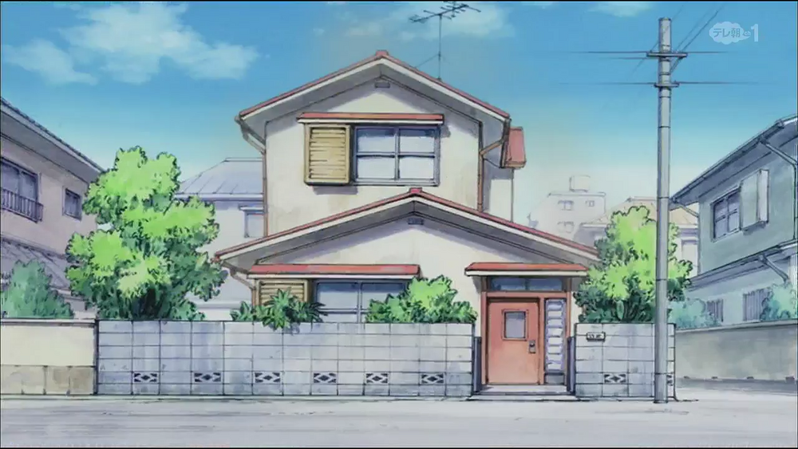
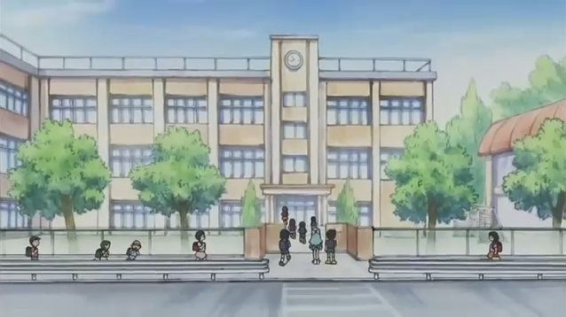

Doraemon Location
สถานที่ในเรื่อง โดเรมอน
1. The Nobis' Residence is the house of The Nobi Family. Nobita Nobi, Nobisuke Nobi, Tamako Nobi and Doraemon live in the Nobis' Residence. The residence has always been the key location in the series and movies. Nobita's grandmother and grandfather have rented the lot to build the residence. The house is of moderate size and has a small garden along with a shed. Nobita's room design was almost like a Washitsu, a Japanese room that is popular with Japanese seniors. Doraemon's Time Machine portal is also located in the drawer of Nobita's desk.

2. The School (学校 gakkō) is a place where Nobita and his friends study. The school has several
buildings and is located in front of the mountain. Nobita (often), Gian and Suneo (sometimes), are
late for the morning class. It runs from 9:00 to 15:00 and is from Monday to Saturday. The only
teacher shown in most episodes is
3. The Open Lot, also known as Empty Lot in the English dub, is one of the recurring locations in
the Doraemon series.It majorly appears in many of the manga chapters, episodes, and feature films.
It is a plain lot with three stacked concrete culverts, sometimes with several planks, a large tree,
some bushes and several pipes on the left. Looking at the grasses and the tree at the lot, the Open
Lot looks like it hasn't been owned for some time now, although sometimes construction equipment
will be placed here temporarily.
This place is an iconic location through out the series as the place where the gang often gather
together, as well as the location for Gian's (deadly) concert. Kaminari's House is located on the
right side of the area which the boys often throw a ball into his house (and break his window).
4. The Mountain (裏山 urayama lit."behind the mountain"), also known as the Hill behind the school or
simply known as Back Hill, is a recurring location in the series behind the school that Nobita and
friends attend. It's notable for being the only place with large amount of greenery and plants left
in Nobita's neighborhood.
5. Tokyo (東京 lit. "The capital of the east") is the town in which Doraemon, Nobita and friends live.
The neighborhood that they live in appears to not be very civilized but still lively. Most of the
episodes and chapters take place in this town and nearby.